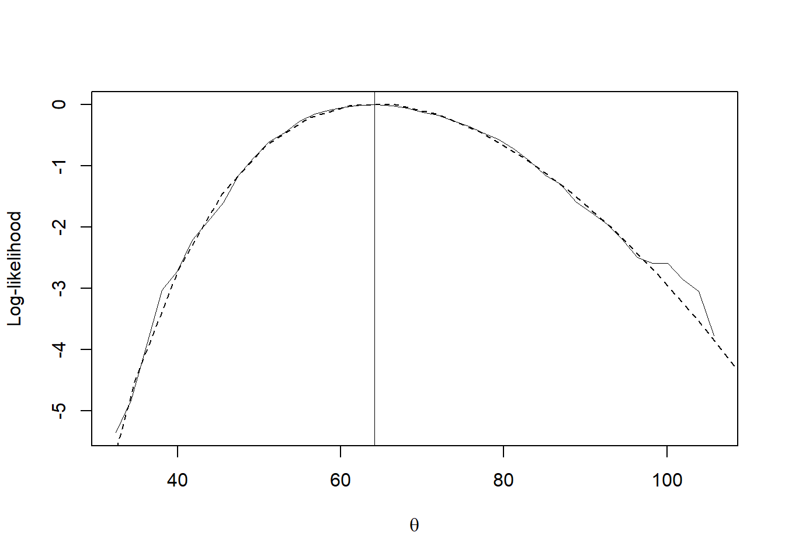

meanlike <- function(x){
n<- length(x)
f1<- function(lambda,x){
x/(n-lambda*x)
}
sx<- sort(x)
nt<- 40
nlam<-40
th<- seq(1.01*sx[1],(sx[n-1]+.99*(sx[n]-sx[n-1])),len=nt)
theta<- NULL
loglik<- NULL
for (i in 1:nt){
a<- x-th[i]
lam <- seq(n/min(a),n/max(a),len=nlam)
lam <- lam[c(-1,-nlam)]
glam <-outer(lam,a,'f1')
glam<- c(glam %*% rep(1,n))
lam0<- approx(glam,lam,xout=0)$y
if (is.na(lam0)==F) { # lam0 exists
w <- 1/(n-lam0*a)
if (min(w)>0 & max(w)<1){ # proper distribution
ll<- sum(log(w))
theta<- c(theta,th[i])
loglik <- c(loglik,ll)
}
} # endif
}# endfor
loglik<- loglik - max(loglik)
out <- list(theta= theta, loglik=loglik)
return(out)
} # end function
# aircraft failure data:
x<- c(50,44,102,72,22,39,3,15,197,188,79,88,46,5,5,
36,22,139,210,97,30,23,13,14)
n<- length(x)
v0<- mean(x)
# bootstrap step:
nb<- 1000
.Random.seed<- c(0,1999,7,29) # today's date
xstar<- sample(x,n*nb,repl=T)## Warning in sample.int(length(x), size, replace, prob): '.Random.seed' n'est pas
## un vecteur d'entiers, mais est de type 'double', et sera donc ignoré xstar<- matrix(xstar,ncol=n) # 24 columns, 1000 rows, each row is a bootstrap
vstar<- c(xstar%*% rep(1,n)/n)
# X %*% rep(1,n) returns rowsums, so here returns the mean for each bootstrap sample
# bootstrap
nt <- 40
phi0<- qnorm(sum(vstar<v0)/nb)
# proportion of bootstrap means that is less than observed sample mean
# ie G_hat(theta_hat), where the hat in the former means G is based on bootstrap and latter means theta is based on observed sample
# qnorm is the normalizing transform; if G is known (not G_hat, which is based on bootstrap),
# then qnorm(.) gives the standard normal
# grid of theta
th<- seq((min(vstar)+1),(max(vstar)-1),len=nt)
# phi is to store the qnorm(.) evaluated at at different bootstrap means (to get distribution)
# that distribution is G_hat(theta)
phi<- rep(0,nt)
for (i in 1:nt){
phi[i]<- qnorm(sum(vstar<th[i])/nb)
}
# a is the rate of change of a standard deviation of the normalized parameter
# for mean this measure the skewness of the data
a<- sum((x-mean(x))^3)/6/sum((x-mean(x))^2)^1.5
#----
# for general parameter, alpha is computed with jackknife procedure
# the jackknife procedure to find theta_hat_(i) (estimated by sample with i_th sample taken out)
mean_jackknife_est <- vector(mode = "integer", length = length(x) - 1)
for (i in seq_along(x)) {
mean_jackknife_est[i] <- mean(x[-i])
}
mean_jackknife_est_mean <- mean(mean_jackknife_est)
a_jackknife <-
sum((mean_jackknife_est_mean - mean_jackknife_est)^3)/6/sum((mean_jackknife_est_mean - mean_jackknife_est)^2)^1.5
# note a and a_jackknife are the same
#----
s <- 1+ a*(phi-phi0)
pmean <- - phi0*s + phi # see p.416
ln<- dnorm(phi0,mean=pmean,sd=s) #.... BCa likelihood
bcall <- log(ln) - max(log(ln)) #! I think this is to make it on the same scale
empll<- meanlike(x) # empirical likelihood
plot(th,bcall, xlab=expression(theta),
ylab='Log-likelihood',type='n')+
lines(th,bcall,lwd=.3)+
abline(v=mean(x),lwd=.3) +
lines(empll[[1]],empll[[2]],lty=2)
## integer(0)